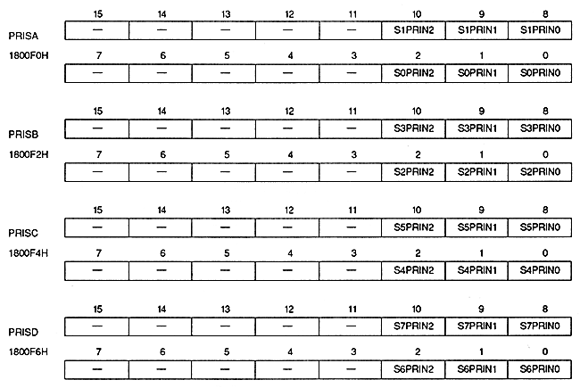

Priority number bit (for sprites) : Sprite priority number bit
| S0PRIN2 to S0PRIN0 | 1800F0H | Bits 2 to 0 | Sprite Register 0 |
| S1PRIN2 to S1PRIN0 | 1800F0H | bits 10 to 8 | Sprite register 1 |
| S2PRIN2 to S2PRIN0 | 1800F2H | Bits 2 to 0 | Sprite register 2 |
| S3PRIN2 to S3PRIN0 | 1800F2H | Bits 10 to 8 | Sprite Register 3 |
| S4PRIN2 to S4PRIN0 | 1800F4H | Bits 2 to 0 | Sprite Register 4 |
| S5PRIN2 to S5PRIN0 | 1800F4H | Bits 10 to 8 | Sprite Register 5 |
| S6PRIN2 to S6PRIN0 | 1800F6H | Bits 2 to 0 | Sprite Register 6 |
| S7PRIN2 to S7PRIN0 | 1800F6H | Bits 10 to 8 | Sprite Register 7 |